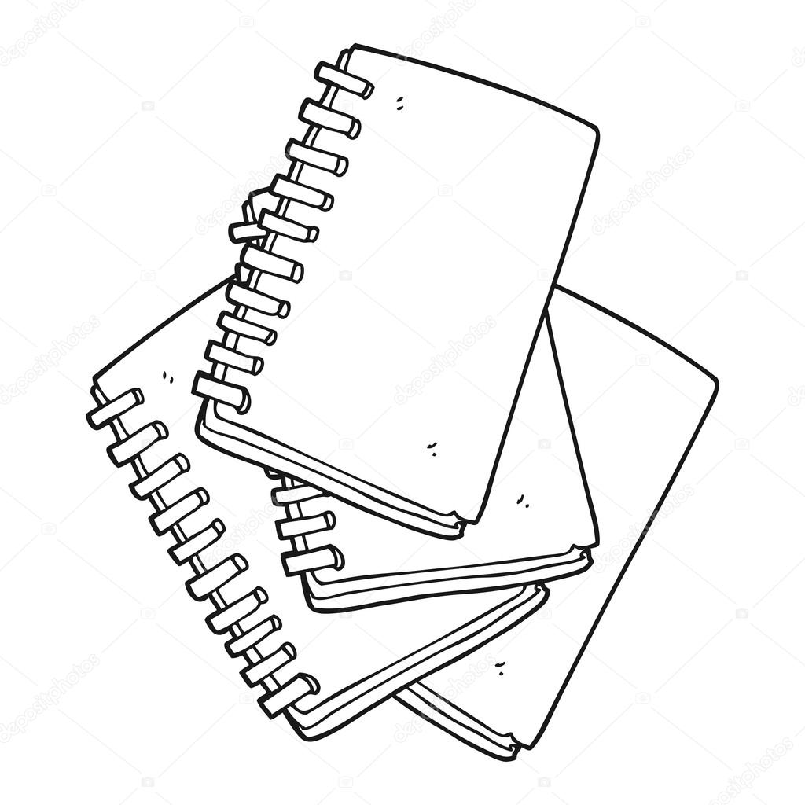

| Datos |
| Datos |
Libreria esmeralda |
| "Libreria esmeralda" es una libreria que abre sus puertas al público en 1988 y cuenta en la actualidad con sucursales en toda la republica. Desde 1989, en colaboracion con la municipalidadorganizmos la feriadel lapiz, durante los dias del 30de septiembre al 16 de octubre,ambos inclusive,en horario 11 de la mañana a 9 de la noche, inniterrrumpidamente, en el paseo san juan. |  |
| Productos disponibles |
| Cuadernos |
| Lapiceros |
| Sacapuntas |
| Sacapuntas |
| Libros de lectura |
| Juegos de geometria |
| Legos |
| Tableros |
| Lana |
| Goma |
| Marcadores |
| Blocks |
| Hoja carta y oficio |
| Folders |
| Ganchos |
| Papel lustre |
| Papel china |
| Papel celofan |
| Tape |
| Maskim tape |
| Yeso |
| Tinta para maracadores |
| etc |